Most rate APIs hand you a number and ask you to trust it. openrate hands you the walk it took through the currency graph, the individual source quotes behind every hop, how far apart those sources are, and a grade for the lot — built from central-bank files and free public venues, never a resold paid API.
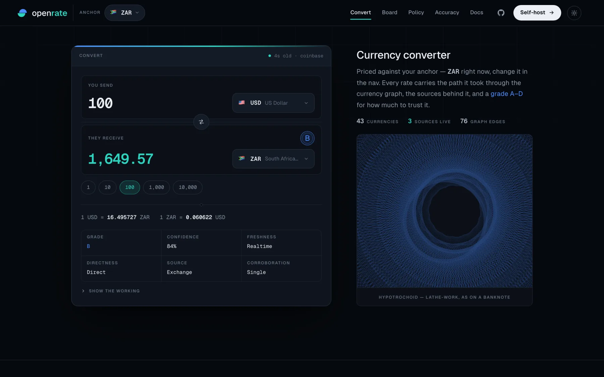
Most rate APIs pick one base currency and derive everything through it, so every number inherits that one feed's problems. openrate keeps each source's quotes in its native base — ECB in EUR, SARB in ZAR, Coinbase in USD — as edges in a currency graph. Any pair is the product of the rates along the shortest path.
Open any rate and the path is drawn: each node a currency, each hop labelled with its own rate, the source that quoted it, and how old that quote is. If a number is a cross-rate, you can see exactly which two numbers it was multiplied from.
?base= for any other.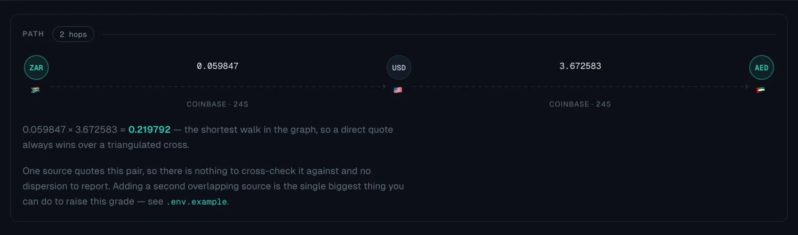
Where more than one source quotes a pair directly, openrate plots them on a scale zoomed to the quotes themselves, marks the mean, and reports the standard deviation and spread in basis points. Sources disagreeing by half a percent is normal across a market close — a daily central-bank fix against a live exchange tick — and the point is that you can see it rather than average it away silently.
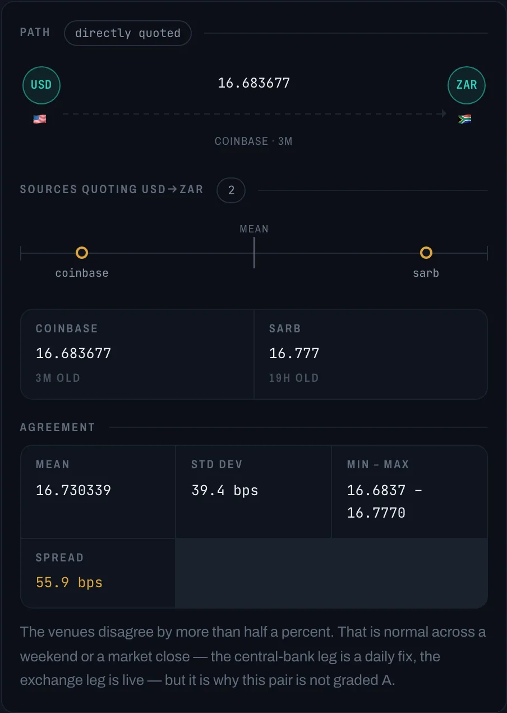
Every price carries a letter grade and a 0–1 confidence. The confidence is a plain product of five factors — freshness, directness, source authority, cross-source agreement and currency caveats — and each factor is returned with the rate, so you can re-derive the score instead of taking it on faith.
Fresh, directly quoted, and corroborated by independent sources that agree tightly.
One weak link — usually a single source, or one triangulation hop.
Stale, multi-hop, or a currency whose official rate is not the rate you would trade at.
Something is materially wrong with the provenance. Read the caveats before using it.
A lone quote, however fresh, is multiplied by 0.88 and can never reach an A — there
is nothing to check it against. NGN and EGP carry a parallel-market
caveat and CNY a managed-regime one, each capping confidence at 0.7, so those
pairs top out at C no matter how good the feed is. Currencies that no longer exist
are removed from the graph rather than graded down: HRK is not a bad
rate, it is not a rate.
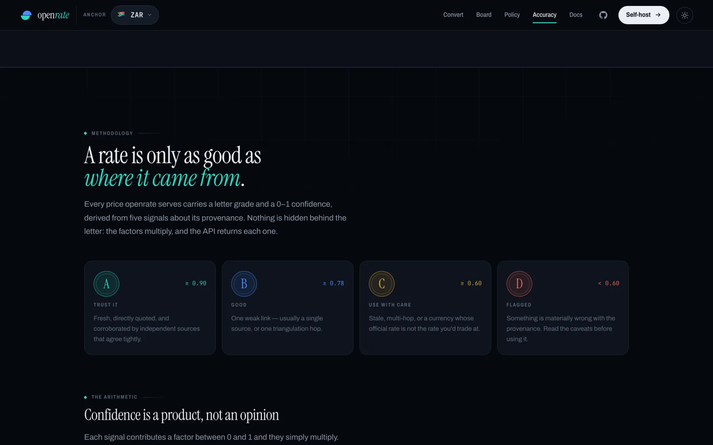
The whole board, every currency against the anchor, sortable by grade or by age — because the useful question is rarely "what is 1 ZAR in AED", it is "which of these numbers should I not lean on". Hop pips show at a glance which rates are quoted and which are derived. Any row opens into the full working in place.
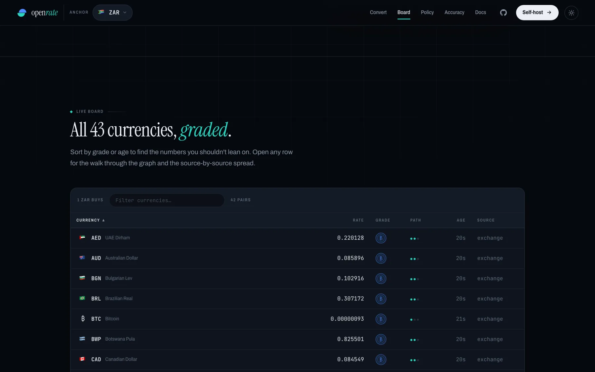
The same binary carries a second engine for central-bank policy rates — 48 areas from the BIS and SARB, with history. They are flat series rather than a currency graph, so they get their own store and a slower refresh, but the identical A–D grading. That grade earns its keep here: the BIS still publishes legacy pre-euro national series whose last observation is from the 1990s, and the grade plus an explicit date is what stops a 1998 number passing for today's.
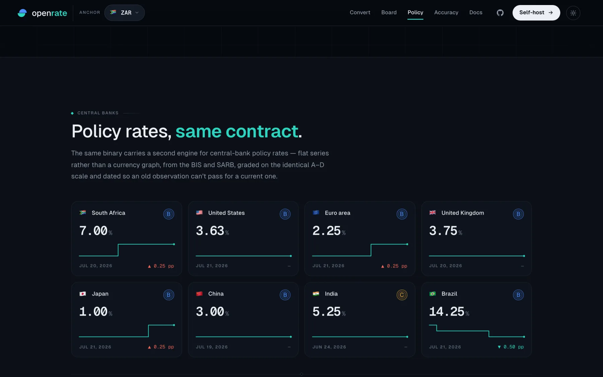
The engine, the JSON API and the web UI are one Go binary with the interface embedded. Nothing to sign up for, no API key, no account — and no telemetry phoning home.
# clone & run — serves the API and the UI on :8080 $ git clone https://github.com/vul-os/openrate $ cd openrate $ go run ./cmd/openrate # or install the command directly $ go install github.com/vul-os/openrate/cmd/openrate@latest $ openrate -base ZAR -refresh 5m # or in Docker $ docker build -t openrate . && docker run -p 8080:8080 openrate
.env and that source auto-enables. More overlapping sources means better corroboration, which means better grades.robots.txt, no-store on the API, and X-Forwarded-For trusted only for proxies you name.All JSON, all CORS-enabled, all rate-limited per IP. The embedded UI is not.
| Path | What it returns |
|---|---|
| GET /api/v1/convert | ?from=USD&to=ZAR&amount=100 — the converted amount plus the rate, its path, per-leg calculation, contributing source quotes and quality block |
| GET /api/v1/rates | ?base=ZAR — every reachable currency against a base, each carrying the same rate object |
| GET /api/v1/meta | Source status, per-source edge counts, and the currency list |
| GET /api/v1/interest/rates | ?area=ZA&type=policy — latest policy rate per series, graded |
| GET /api/v1/interest/series | ?id=za.policy — the full observation history for one series |
| GET /api/v1/interest/meta | Areas, the series catalogue and interest-source status |
| GET /healthz | Liveness probe |
{
"result": 1668.77,
"rate": {
"rate": 16.687657,
"hops": 1,
"path": ["USD", "ZAR"],
"sources": ["coinbase"],
"quotes": [
{ "source": "coinbase", "rate": 16.687657, "age_sec": 28 },
{ "source": "sarb", "rate": 16.777, "age_sec": 67470 }
],
"quality": {
"grade": "B",
"confidence": 0.89,
"freshness": "realtime",
"directness": "direct",
"source_class": "exchange",
"corroboration": { "sources": 2, "spread_bps": 53.54, "agree": false }
}
}
}
Both themes ship in the binary and the choice persists across the app and these docs.
Every image on this page is a real capture of the running engine — see
web/scripts/shots.mjs.
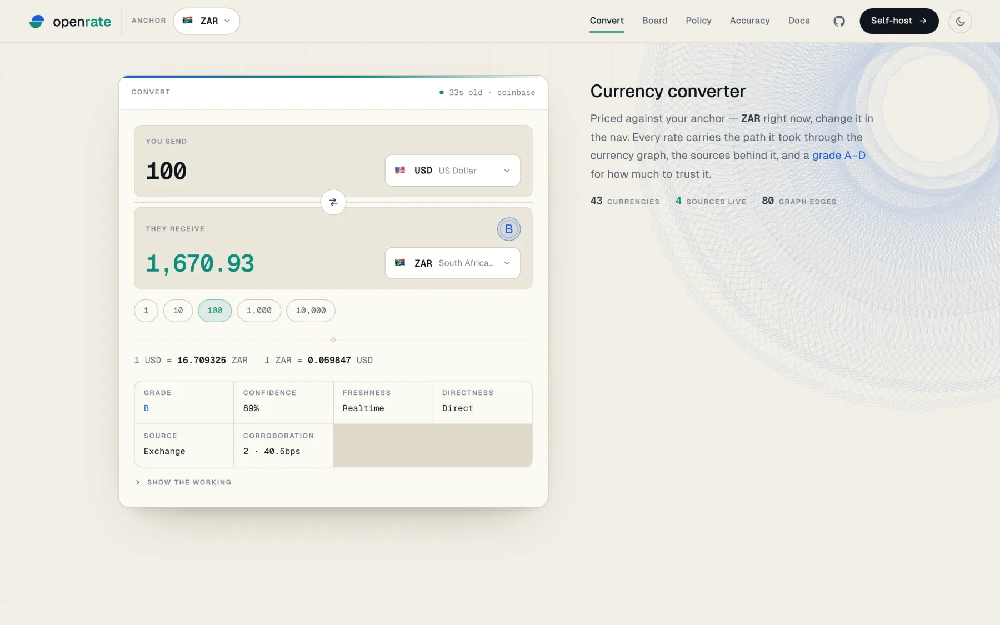
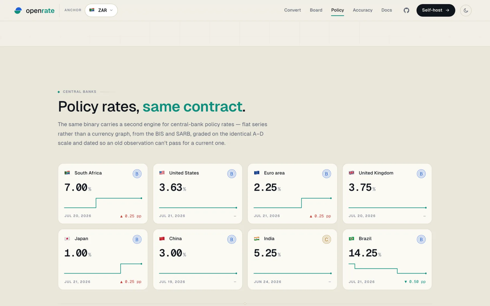
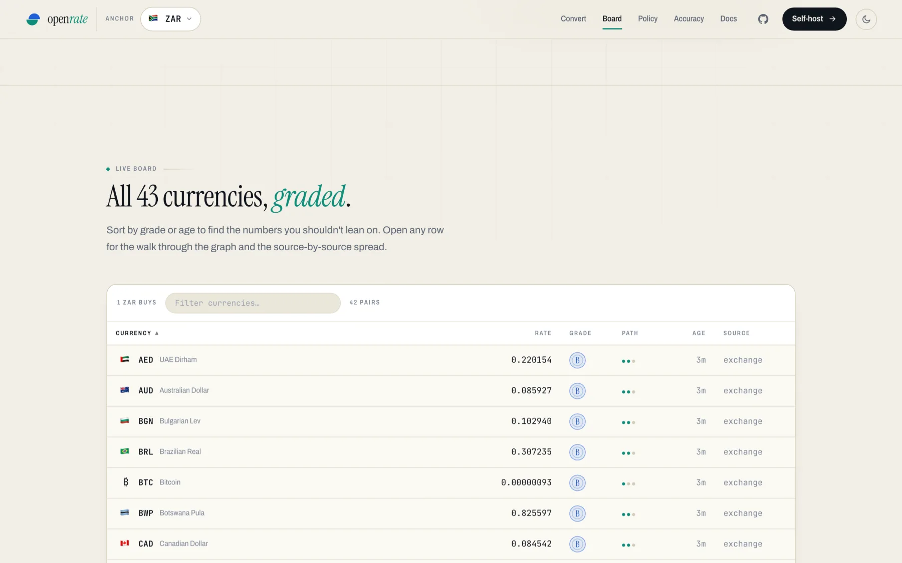
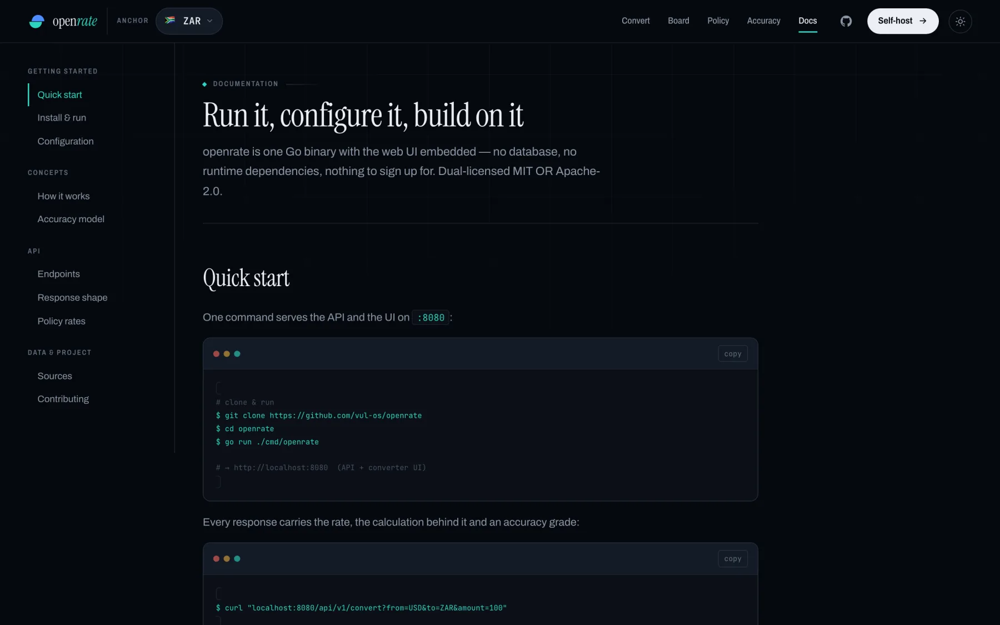
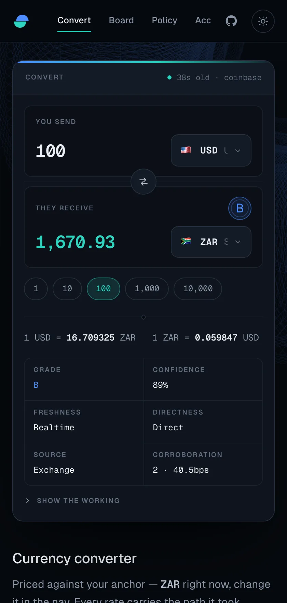
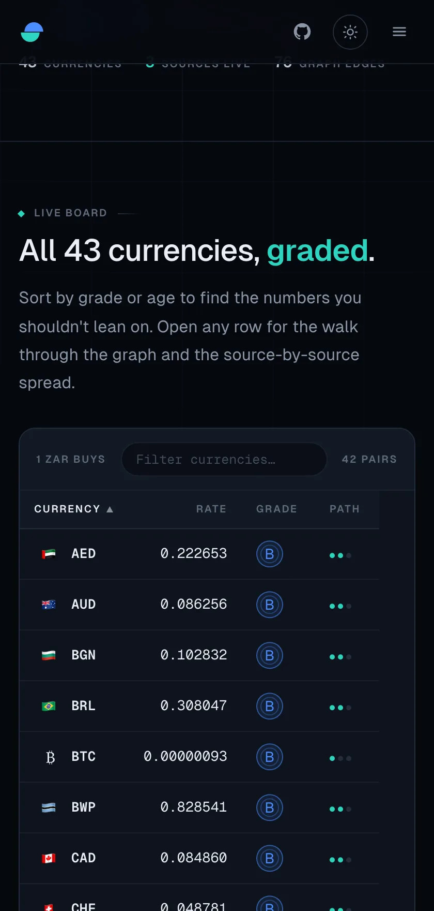